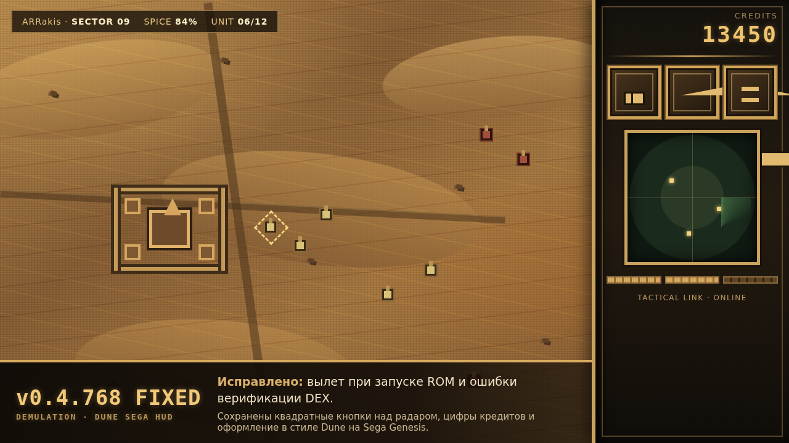

SEGA MEGA DRIVE · 1994 STYLE
DEMULATION
DUNE: The Battle for Arrakis — HUD Mod
Квадратные кнопки в духе оригинальной Dune на Sega: юниты и база больше не круги, а кнопка юнитов переехала в правое меню на место надписи «КРЕДИТЫ».

Что изменено
- Кнопка юнитов и кнопка базы стали квадратными.
- Кнопка юнитов встроена в правое меню вместо надписи «КРЕДИТЫ».
- Стиль рамок и иконок — ближе к Sega Dune (тёмный фон, золотой кант).
- Исправлен вылет при запуске ROM: устранены четыре ошибки верификации DEX в
MainActivity$WorldView. - Сборка FIXED проходит принудительную проверку ART без ошибок и сохраняет все правки HUD.
Сборка
apktool b -o unsigned.apk apktoolout
zipalign -p -f 4 unsigned.apk aligned.apk
apksigner sign --ks tools/mod.jks aligned.apk